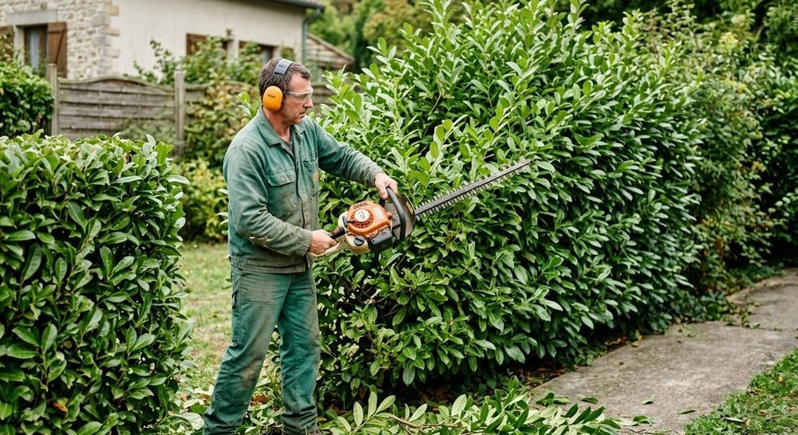
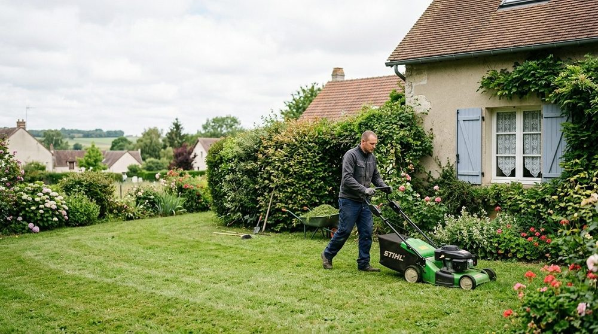

Nos prestations
Créer et entretenir votre jardin.
Création, plantations, tonte et taille de haies : Kemo Fofana intervient sur votre jardin à Chatou.



Création de jardins
Concevoir et planter votre jardin.
Création de massifs, d'allées et de pelouses, adaptée à votre terrain et à vos envies.
- Conception de jardin
- Création de massifs
- Plantation d'arbres et d'arbustes
- Plantation de vivaces
Entretien de jardin
Un jardin bien entretenu
Tonte, désherbage et taille : l'entretien courant de votre jardin, selon vos besoins.
- Tonte de la pelouse
- Désherbage des massifs
- Ramassage des feuilles
- Taille de haies et d'arbustes

Pelouses et haies
Des pelouses et des haies
bien tenues.
Pelouse
Tonte
Tonte régulière de la pelouse, adaptée à la surface du jardin et à la saison.
Pelouse
Engazonnement
Pose de gazon ou semis pour installer ou refaire une pelouse.